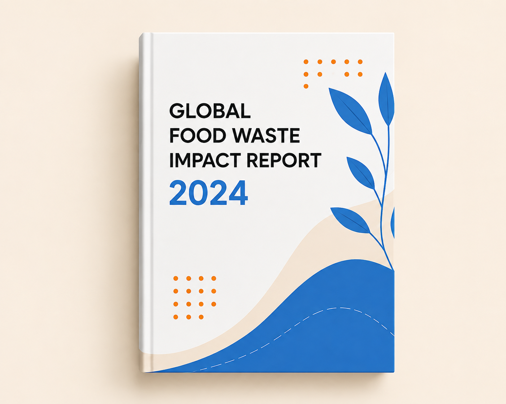

Guides, Reports & Tools to Create Impact
Search technical whitepapers, ESG reports, implementation guides, and compliance tools built for donors, NGOs, and logistics partners.


Global Food Waste & AI Redistribution Report — Draft 1
Our research draft proposing an AI-assisted coordination architecture for surplus food redistribution — grounded in UNEP and FAO data, with target performance metrics clearly separated from simulated or measured results.
Commercial Food Safety & Donation Compliance Manual
A legal and operational playbook for donating surplus perishable goods safely.
Read Guide →Phase 2: Existing Solutions & Research Gap
A literature review of Too Good To Go, OLIO, Feeding America, and FoodCloud — and where FoodGrid AI's research contribution actually sits.
Read Report →Resource Categories
Guides
12 Resources
Reports
8 Resources
Webinars
6 Resources
Case Studies
10 Resources
Tools
7 Resources
Popular Downloads

Need Custom Data or Research Support?
Our team assists researchers, municipal authorities, and enterprise CSR teams with custom impact models and data extracts.